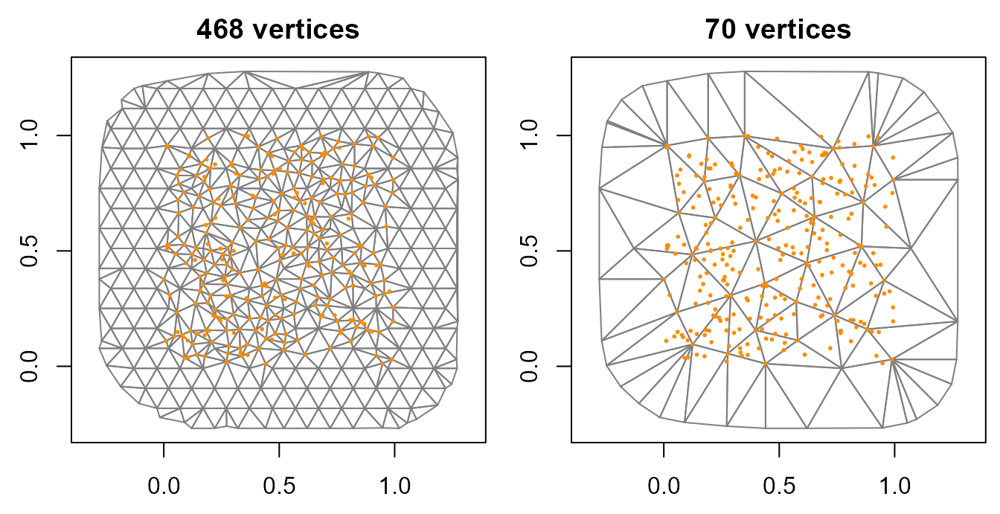
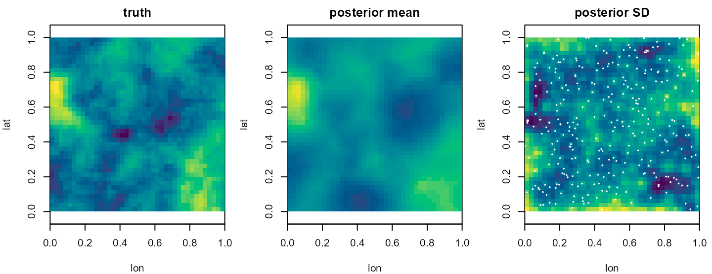
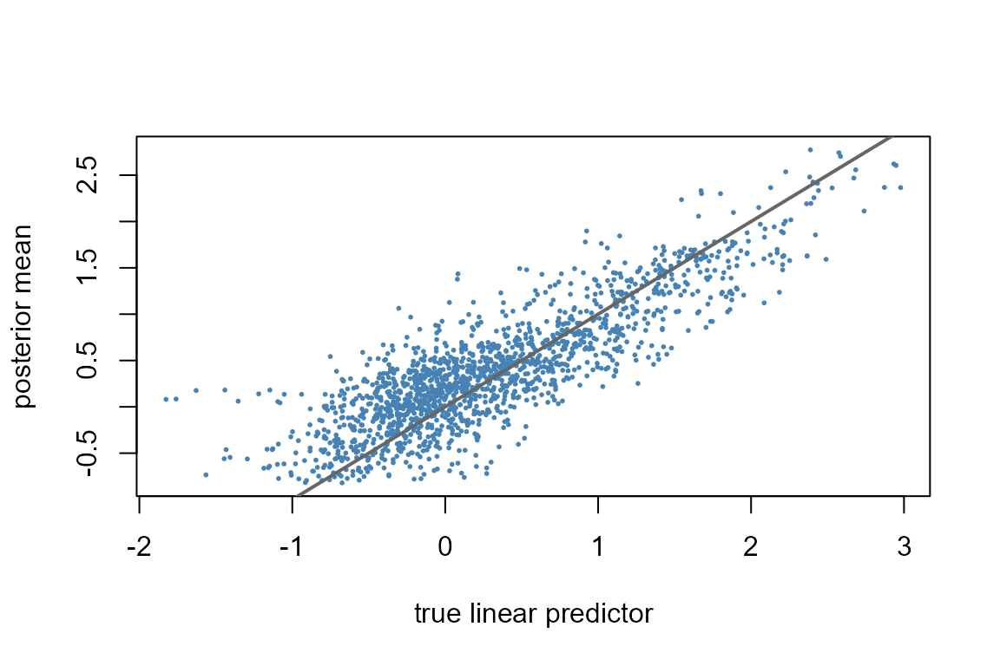

Survey points, traps and sensors sit on coordinates, and a spatial signal between them is smooth in distance. A Matern Gaussian field is a prior for such a signal, and the stochastic partial differential equation (SPDE) approach of Lindgren, Rue and Lindstrom (2011) represents it on a triangular mesh with a sparse precision matrix. This article writes the model down, builds meshes with tulpaMesh, simulates Poisson counts from a field with known range and standard deviation, fits it, maps the posterior mean and SD of the field on a grid, and compares the fit with a non-spatial model and with NNGP and HSGP fields. It ends with guidance on the mesh, measured on the same data. Spatial models shows a first SPDE fit in a few lines; installation is covered in Get started.
The Matern field and its SPDE
Consider observations at locations in the plane, with counts and one covariate . The counts are Poisson with mean , and
where is a spatial field with mean zero. The field has a Matern covariance: two locations at distance have
where
is the marginal standard deviation,
the smoothness,
a scale parameter and
the modified Bessel function of the second kind. The range
is the distance at which the correlation has fallen to about 0.1 to
0.14, depending on
;
fit_spde() and spatial_spde() take and report
the field by
.
A field with this covariance solves the SPDE
with the Laplacian and Gaussian white noise. The constant fixes the marginal variance, , so a pair determines and the other way round.
The finite-element step writes the field as , one piecewise-linear basis function per mesh vertex, so is the field at vertex . Two sparse matrices describe the mesh: the mass matrix , here diagonal, and the stiffness matrix , whose entries are the integrals of . With , the vertex values have precision
which at the default is . An entry of is nonzero only for vertices that share a triangle or a neighbour, so the field’s cost grows with the mesh and stays sparse. The projector , with , gives the field at the observations as . A non-integer makes fractional; tulpa then uses a rational approximation of the field’s covariance (Bolin and Kirchner 2020), shown at the end of the article.
Simulating point data
Place 300 observations uniformly in the unit square and lay a 40 by 40 prediction grid over the same square. The field is drawn once, jointly at the observations and the grid nodes, from the Matern covariance at with range 0.3 and marginal SD 0.8, so the grid carries the true field for later checks. At the covariance reduces to .
matern1 <- function(h, range, sigma) {
kh <- sqrt(8) / range * h
ifelse(h == 0, sigma^2, sigma^2 * kh * besselK(kh, 1))
}
set.seed(11)
n <- 300
obs <- data.frame(lon = runif(n), lat = runif(n))
g1 <- seq(0.0125, 0.9875, length.out = 40)
grid <- expand.grid(lon = g1, lat = g1)
K <- matern1(as.matrix(dist(rbind(obs, grid))), range = 0.3, sigma = 0.8)
w <- as.numeric(t(chol(K + diag(1e-8, nrow(K)))) %*% rnorm(nrow(K)))
w_obs <- w[1:n]; w_grid <- w[-(1:n)]The counts have intercept 0.5 and covariate slope 0.4, with the covariate drawn independently of the field.
Building a mesh
spatial_spde() builds the mesh from the coordinates
through tulpaMesh::tulpa_mesh(), computes the
finite-element matrices and the projector, and returns the field
specification. Two arguments set the mesh: max_edge is the
longest triangle edge allowed, as c(inner, outer) for the
study area and a narrow extension around it, and cutoff is
the distance below which points are merged into one vertex. Every
observation is a mesh vertex unless cutoff merges it, so
cutoff controls the resolution among the points and
max_edge the resolution in the gaps between them.
fine <- spatial_spde(~ lon + lat, data = obs,
max_edge = c(0.1, 0.4), cutoff = 0.03)
coarse <- spatial_spde(~ lon + lat, data = obs,
max_edge = c(0.3, 0.4), cutoff = 0.15)
c(fine = fine$n_mesh, coarse = coarse$n_mesh)
#> fine coarse
#> 468 70
apply(fine$mesh$vertices, 2, range)
#> [,1] [,2]
#> [1,] -0.2794624 -0.2686362
#> [2,] 1.2737745 1.2778005The tulpaMesh plot() method draws a mesh; the points are
the observations.
op <- par(mfrow = c(1, 2), mar = c(2.5, 2.5, 2, 0.5))
plot(fine$mesh, main = paste(fine$n_mesh, "vertices"))
points(obs$lon, obs$lat, pch = 20, cex = 0.4, col = "darkorange")
plot(coarse$mesh, main = paste(coarse$n_mesh, "vertices"))
points(obs$lon, obs$lat, pch = 20, cex = 0.4, col = "darkorange")
par(op)The fine mesh ends about 0.27 beyond the outermost observations. A
mesh with a wider margin is built with
tulpaMesh::tulpa_mesh() and its extend
argument, and passed to spatial_spde() as
mesh.
Fitting
Pass the specification through spatial= in
tulpa(). The coordinates are already in the specification,
so the formula has no spatial() term, and the fit goes to
the SPDE backend.
fit <- tulpa(y ~ x, data = obs, family = "poisson", spatial = fine,
control = list(n_threads = 2))
#> [nested-laplace] preparing joint Hessian sparsity pattern
#> [nested-laplace] 1/441 cells (0%) | elapsed 0s | ETA >=6s | 0.01s/cells
#> [nested-laplace] 153/441 cells (35%) | elapsed 2s | ETA ~4s | 0.01s/cells
#> [nested-laplace] 326/441 cells (74%) | elapsed 4s | ETA ~1s | 0.01s/cells
#> [nested-laplace] 441/441 cells (100%) | elapsed 5s | ETA done | 0.01s/cells
fit$backend
#> [1] "spde"
coef(summary(fit))
#> estimate std.error 2.5 % 97.5 %
#> (Intercept) 0.4355807 0.29121145 -0.1351833 1.0063446
#> x 0.3292975 0.04857726 0.2340878 0.4245072The slope interval contains the simulated 0.4. With
range and sigma left unset, the fit integrates
over both by nested Laplace: an inner Laplace solve of the coefficients
and the vertex field at each design point of a central composite design
in
,
weighted by the marginal likelihood and the priors.
spatial_range() reports the two hyperparameters with their
posterior mean, SD and 95% bounds.
spatial_range(fit)
#> mean sd q2.5 q97.5
#> range 0.3887560 Inf 0.2136350 0.7103332
#> sigma 0.9154577 0.187789 0.6426455 1.5157501Both intervals contain the simulated values, a range of 0.3 and an SD
of 0.8. diagnostics() scores the outer integration over
with a
Pareto-
from importance sampling against the Gaussian the design was laid on;
here it reads 0.491, marked good.
diagnostics(fit)
#> SPDE nested-Laplace OUTER-integration reliability (i.i.d. draws)
#> scope: the outer (range, sigma) integration; the latent-field Laplace is a
#> separate, unscored layer.
#> outer PSIS pareto_k = 0.491 (good); IS-ESS = 462.7
#> proposal: mode_hessian; as the backend placed it, 0.491 (good)
#> whole-fit verdict: outer integration good; inner Laplace not assessed
#> per-parameter columns: none.
#> the fit carries no posterior draws, so the per-parameter mean / sd / per-parameter columns are empty; tulpa_posterior_draws(fit) samples the retained outer-grid mixture if a sample is wantedPC priors on range and SD
The hyperparameters carry penalised-complexity (PC) priors, set on
the specification as c(U, alpha) pairs:
prior_range states
and prior_sigma states
.
By default U for the range is a fifth of the diagonal of
the coordinates’ bounding box, with
,
so U is the prior median, and the SD prior is
c(3, 0.01).
rbind(range = fine$prior_range, sigma = fine$prior_sigma)
#> [,1] [,2]
#> range 0.2799807 0.50
#> sigma 3.0000000 0.01To see how much the range prior moves the fit, refit with a prior
median of 0.05 and of 1, twenty times apart. fit_spde() is
the SPDE fitter tulpa() called above; it takes the
response, a design matrix and the specification directly.
X <- model.matrix(~ x, obs)
prior_fit <- function(pr) {
sp <- spatial_spde(~ lon + lat, data = obs, max_edge = c(0.1, 0.4),
cutoff = 0.03, prior_range = pr)
f <- fit_spde(obs$y, X, sp, family = "poisson",
control = list(n_threads = 2))
c(range = f$nested$range_mean, sigma = f$nested$sigma_mean,
slope = coef(f)[["x"]])
}
round(rbind(median_0.05 = prior_fit(c(0.05, 0.5)),
median_1 = prior_fit(c(1, 0.5))), 3)
#> [nested-laplace] preparing joint Hessian sparsity pattern
#> [nested-laplace] 1/441 cells (0%) | elapsed 0s | ETA >=8s | 0.02s/cells
#> [nested-laplace] 214/441 cells (49%) | elapsed 2s | ETA ~2s | 0.01s/cells
#> [nested-laplace] 424/441 cells (96%) | elapsed 4s | ETA ~0s | 0.01s/cells
#> [nested-laplace] 441/441 cells (100%) | elapsed 4s | ETA done | 0.01s/cells
#> [nested-laplace] preparing joint Hessian sparsity pattern
#> [nested-laplace] 1/441 cells (0%) | elapsed 0s | ETA >=7s | 0.01s/cells
#> [nested-laplace] 206/441 cells (47%) | elapsed 2s | ETA ~2s | 0.01s/cells
#> [nested-laplace] 407/441 cells (92%) | elapsed 4s | ETA ~0s | 0.01s/cells
#> [nested-laplace] 441/441 cells (100%) | elapsed 4s | ETA done | 0.01s/cells
#> range sigma slope
#> median_0.05 0.374 0.899 0.329
#> median_1 0.436 0.970 0.330The posterior mean range moves from about 0.37 to about 0.44 across the two priors and the slope by less than 0.002, so with 300 observations the data dominate both priors.
The field on a grid
field_effects() returns the field at each mesh vertex.
On the nested path this is the Gaussian mixture over the integration
cells, so sd carries both the within-cell variance and the
spread over the hyperparameters.
fe <- field_effects(fit)
head(fe[, c("unit", "estimate", "sd")], 3)
#> unit estimate sd
#> 1 1 -0.7638708 0.5729390
#> 2 2 -0.4601378 0.6555288
#> 3 3 0.1020361 0.5942264predict() projects the vertex field to new coordinates
through the mesh and adds the fixed effects. At
the link-scale prediction is
. With se.fit = TRUE
its standard error carries the joint posterior of the coefficients and
the field at the fitted hyperparameters, so it includes the intercept’s
uncertainty and leaves out the spread over
.
pg <- predict(fit, newdata = data.frame(grid, x = 0), se.fit = TRUE)
head(pg, 3)
#> fit se.fit lower upper
#> 1 0.1294551 0.6164056 -1.0740810 1.327131
#> 2 0.2013103 0.5520476 -0.8792920 1.299116
#> 3 0.2900386 0.5408338 -0.7681292 1.355415The true linear predictor at is . The three maps show it, the posterior mean and the posterior SD, with the observation locations on the SD map.
Plotting code
map <- function(v, main, zlim = range(v)) {
image(g1, g1, matrix(v, 40, 40), zlim = zlim, asp = 1, main = main,
col = hcl.colors(50, "viridis"), xlab = "lon", ylab = "lat")
}
eta_true <- 0.5 + w_grid
zl <- range(eta_true, pg$fit)
op <- par(mfrow = c(1, 3), mar = c(4, 4, 2, 1))
map(eta_true, "truth", zl)
map(pg$fit, "posterior mean", zl)
map(pg$se.fit, "posterior SD")
points(obs$lon, obs$lat, pch = 20, cex = 0.3, col = "white")
par(op)The posterior mean recovers the large-scale highs and lows of the truth and smooths the small-scale detail. The SD is lowest among dense observations and highest in the gaps and at the edges.
Checking the fit
Plotting the predicted against the true linear predictor over the 1600 grid nodes shows how much of the field the counts identify.
plot(eta_true, pg$fit, pch = 20, cex = 0.4, col = "steelblue",
xlab = "true linear predictor", ylab = "posterior mean")
abline(0, 1, lwd = 2, col = "grey40")
The points scatter around the identity line, and the lowest true values are predicted too high. The share of grid nodes whose true value lies inside the 95% prediction interval, and the correlation between truth and posterior mean:
c(coverage = mean(eta_true >= pg$lower & eta_true <= pg$upper),
correlation = cor(eta_true, pg$fit))
#> coverage correlation
#> 0.8950000 0.8524161The coverage is below 0.95. The interval holds
at their fitted values and leaves out their spread, which
?predict.tulpa_fit notes makes it mildly optimistic when
that posterior is wide.
Mesh resolution
A mesh coarser than the field’s range cannot represent the field’s
variation between vertices. Fit the same data on three meshes, from
triangles six times shorter than the range to triangles as long as the
range, and score each by time, the hyperparameters, the slope and the
root mean squared error of the projected field against the truth on the
grid. tulpaMesh::fem_matrices() with
obs_coords returns the projector from the mesh vertices to
the grid.
mesh_fit <- function(edge, cutoff) {
sp <- spatial_spde(~ lon + lat, data = obs, max_edge = c(edge, 0.4),
cutoff = cutoff)
t <- system.time(f <- fit_spde(obs$y, X, sp, family = "poisson",
control = list(n_threads = 2)))
A_grid <- tulpaMesh::fem_matrices(sp$mesh, obs_coords = as.matrix(grid))$A
w_hat <- as.numeric(A_grid %*% field_effects(f)$estimate)
c(max_edge = edge, vertices = sp$n_mesh, seconds = t[["elapsed"]],
range = f$nested$range_mean, sigma = f$nested$sigma_mean,
slope = coef(f)[["x"]], rmse = sqrt(mean((w_hat - w_grid)^2)))
}
res_mesh <- rbind(mesh_fit(0.05, 0.02), mesh_fit(0.15, 0.08),
mesh_fit(0.3, 0.15))
#> [nested-laplace] preparing joint Hessian sparsity pattern
#> [nested-laplace] 1/441 cells (0%) | elapsed 0s | ETA >=22s | 0.05s/cells
#> [nested-laplace] 59/441 cells (13%) | elapsed 2s | ETA ~13s | 0.03s/cells
#> [nested-laplace] 119/441 cells (27%) | elapsed 4s | ETA ~11s | 0.03s/cells
#> [nested-laplace] 178/441 cells (40%) | elapsed 6s | ETA ~9s | 0.03s/cells
#> [nested-laplace] 240/441 cells (54%) | elapsed 8s | ETA ~7s | 0.03s/cells
#> [nested-laplace] 299/441 cells (68%) | elapsed 10s | ETA ~5s | 0.03s/cells
#> [nested-laplace] 357/441 cells (81%) | elapsed 12s | ETA ~3s | 0.03s/cells
#> [nested-laplace] 412/441 cells (93%) | elapsed 14s | ETA ~1s | 0.03s/cells
#> [nested-laplace] 441/441 cells (100%) | elapsed 15s | ETA done | 0.03s/cells
#> [nested-laplace] preparing joint Hessian sparsity pattern
#> [nested-laplace] 1/441 cells (0%) | elapsed 0s | ETA >=2s | 0.01s/cells
#> [nested-laplace] 441/441 cells (100%) | elapsed 1s | ETA done | 0.00s/cells
#> [nested-laplace] preparing joint Hessian sparsity pattern
#> [nested-laplace] 1/441 cells (0%) | elapsed 0s | ETA >=1s | 0.00s/cells
#> [nested-laplace] 441/441 cells (100%) | elapsed 1s | ETA done | 0.00s/cells
round(res_mesh, 3)
#> max_edge vertices seconds range sigma slope rmse
#> [1,] 0.05 1269 42.36 0.383 0.927 0.330 0.435
#> [2,] 0.15 159 3.47 0.394 0.973 0.359 0.441
#> [3,] 0.30 70 1.60 0.373 1.171 0.353 0.450Times are elapsed seconds on the machine that built this page, 300 observations, two threads. All three meshes report a range between 0.37 and 0.40, within the posterior SD of the range; the coarsest mesh, with edges as long as the range, reports a larger SD, 1.17 against 0.93 and 0.97 on the two finer meshes. The finest takes about twelve times as long as the middle one for a grid error 0.006 lower.
Comparing with other spatial fits
The same counts can be fitted without a field and with the two other
continuous fields of tulpa: an NNGP field (spatial_gp(),
exponential covariance, 15 neighbours) and a Hilbert-space GP
(approx = "hsgp", here with 12 basis functions per
dimension). predict() adds each continuous field to the
prediction, so subtracting the prediction without the field
(include_field = FALSE) gives the field on the grid.
ctl <- list(n_threads = 2)
nd <- data.frame(grid, x = 0)
fits <- list(spde = fit)
time <- c(spde = NA)
time["nonspatial"] <- system.time(fits$nonspatial <- tulpa(
y ~ x, data = obs, family = "poisson", mode = "laplace"))[["elapsed"]]
time["nngp"] <- system.time(fits$nngp <- tulpa(
y ~ x, data = obs, family = "poisson",
spatial = spatial_gp(~ lon + lat), control = ctl))[["elapsed"]]
#> [nested-laplace] preparing joint Hessian sparsity pattern
#> [nested-laplace] 1/25 cells (4%) | elapsed 5s | ETA >=2.2min | 5.43s/cells
#> [nested-laplace] 6/6 cells (100%) | elapsed 6s | ETA done | 1.05s/cells
#> [nested-laplace] preparing joint Hessian sparsity pattern
#> [nested-laplace] 1/25 cells (4%) | elapsed 0s | ETA >=1s | 0.06s/cells
#> [nested-laplace] 18/18 cells (100%) | elapsed 1s | ETA done | 0.08s/cells
time["hsgp"] <- system.time(fits$hsgp <- tulpa(
y ~ x, data = obs, family = "poisson",
spatial = spatial_gp(~ lon + lat, approx = "hsgp", m = 12),
control = ctl))[["elapsed"]]
#> [nested-laplace] preparing joint Hessian sparsity pattern
#> [nested-laplace] 1/25 cells (4%) | elapsed 0s | ETA >=1s | 0.03s/cells
#> [nested-laplace] 6/6 cells (100%) | elapsed 0s | ETA done | 0.06s/cells
#> [nested-laplace] preparing joint Hessian sparsity pattern
#> [nested-laplace] 1/25 cells (4%) | elapsed 0s | ETA >=1s | 0.02s/cells
#> [nested-laplace] 21/21 cells (100%) | elapsed 1s | ETA done | 0.03s/cells
time["spde"] <- system.time(tulpa(
y ~ x, data = obs, family = "poisson", spatial = fine,
control = ctl))[["elapsed"]]
#> [nested-laplace] preparing joint Hessian sparsity pattern
#> [nested-laplace] 1/441 cells (0%) | elapsed 0s | ETA >=8s | 0.02s/cells
#> [nested-laplace] 216/441 cells (49%) | elapsed 2s | ETA ~2s | 0.01s/cells
#> [nested-laplace] 415/441 cells (94%) | elapsed 4s | ETA ~0s | 0.01s/cells
#> [nested-laplace] 441/441 cells (100%) | elapsed 4s | ETA done | 0.01s/cells
field_rmse <- function(f) {
w_hat <- predict(f, newdata = nd) - predict(f, newdata = nd,
include_field = FALSE)
sqrt(mean((w_hat - w_grid)^2))
}
tab <- t(sapply(fits, function(f) {
unlist(coef(summary(f))["x", c("estimate", "std.error")])
}))
tab <- cbind(tab, seconds = time[rownames(tab)],
grid_rmse = c(sapply(fits[-2], field_rmse), nonspatial = NA)[rownames(tab)])
round(tab, 3)
#> estimate std.error seconds grid_rmse
#> spde 0.329 0.049 12.36 0.433
#> nonspatial 0.402 0.042 0.02 NA
#> nngp 0.334 0.051 13.20 0.431
#> hsgp 0.339 0.045 3.82 0.443The three fields reach grid errors within about 0.03 of each other, the SPDE field the lowest, and agree on the slope to within 0.015. On this dataset the non-spatial slope, 0.402, is closer to the simulated 0.4, and its standard error is smaller than those of the spatial fits; every slope interval contains 0.4. The non-spatial fit has no field to project.
The widely applicable information criterion (WAIC) ranks the four fits by estimated out-of-sample predictive accuracy, computed from each fit’s pointwise log-likelihood with its field included.
compare_models(nonspatial = fits$nonspatial, spde = fits$spde,
nngp = fits$nngp, hsgp = fits$hsgp, criterion = "waic")
#> model elpd se_elpd p_eff ic delta se_diff
#> 3 nngp -494.9421 14.46039 71.91668 989.8843 0.0000000 NA
#> 2 spde -495.8170 15.60920 61.98838 991.6340 -0.8748791 1.996046
#> 4 hsgp -500.2318 17.27644 49.13809 1000.4637 -5.2897024 4.437305
#> 1 nonspatial -664.1170 49.82610 7.82318 1328.2340 -169.1748583 44.758013
#> weight
#> 3 7.032568e-01
#> 2 2.931965e-01
#> 4 3.546707e-03
#> 1 2.373594e-74All three spatial fits sit about 165 to 177 units of expected log predictive density above the non-spatial one. Among them the SPDE field ranks first, the NNGP field 7.6 below it with a standard error of 4.6 on the difference, and the HSGP field 12.6 below with a standard error of 4.8.
Fractional smoothness
nu sets the smoothness. An integer
gives the exact construction above; any other positive
uses a covariance-based rational field, a sum of Markov components whose
prior carries its exact normaliser, with the Laplace fitter
fit_spde() at fixed or integrated hyperparameters. At
the Matern covariance is exponential. A fit at fixed range and SD shows
the call:
sp_half <- spatial_spde(~ lon + lat, data = obs, max_edge = c(0.1, 0.4),
cutoff = 0.03, nu = 0.5)
f_half <- fit_spde(obs$y, X, sp_half, family = "poisson",
range = 0.3, sigma = 0.8)
round(coef(f_half), 3)
#> (Intercept) x
#> 0.452 0.331Leaving range and sigma unset integrates
over both at fractional
too. The sampler path (mode = "nuts") takes fractional
at fixed range and sigma only, and the
analytic standard errors behind predict(se.fit = TRUE) take
integer
only.
Matrices from another mesh
spatial_spde_custom() takes the mass matrix, the
stiffness matrix and the projector directly, for a mesh built elsewhere.
Built from the finite-element matrices of the fine mesh, it should give
the same fit as spatial_spde().
fem <- tulpaMesh::fem_matrices(fine$mesh,
obs_coords = as.matrix(obs[, c("lon", "lat")]))
sp_custom <- spatial_spde_custom(fem$C, fem$G, fem$A,
prior_range = fine$prior_range,
prior_sigma = fine$prior_sigma)
f_custom <- fit_spde(obs$y, X, sp_custom, family = "poisson",
control = list(n_threads = 2))
#> [nested-laplace] preparing joint Hessian sparsity pattern
#> [nested-laplace] 1/441 cells (0%) | elapsed 0s | ETA >=7s | 0.02s/cells
#> [nested-laplace] 211/441 cells (48%) | elapsed 2s | ETA ~2s | 0.01s/cells
#> [nested-laplace] 440/441 cells (100%) | elapsed 4s | ETA ~0s | 0.01s/cells
#> [nested-laplace] 441/441 cells (100%) | elapsed 4s | ETA done | 0.01s/cells
rbind(spatial_spde = coef(fit), spatial_spde_custom = coef(f_custom))
#> (Intercept) x
#> spatial_spde 0.4355807 0.3292975
#> spatial_spde_custom 0.4355807 0.3292975Practical guidance
-
Mesh edge against the range. On these data, inner
edges of a sixth and a half of the range (0.05 and 0.15 against 0.3)
gave the same hyperparameters within their posterior SD and grid errors
0.006 apart, while edges as long as the range raised the SD estimate
from 0.93 to 1.17. Start with an inner
max_edgeat most half the range you expect, and refit at half that edge: if the range and the slope do not move, the coarser mesh is enough. -
Cost grows with the vertices. The fine mesh of the
comparison above had about eight times the vertices of the middle one
and took about thirteen times as long.
cutoffis the lever for clustered data, since every point closer thancutoffto another shares its vertex. -
Priors. With 300 observations, prior medians for
the range twenty times apart moved the posterior mean range by about a
sixth and the slope by less than 0.002. With few observations or a range
close to the size of the study area, set
prior_rangefrom what is known about the process, and compare two priors as above. - Read the hyperparameter intervals with the prediction intervals. The grid intervals hold fixed and covered less than 95% of the true values here.
-
When not to use the SPDE field. Areal data on
regions with borders take an areal field (Spatial models). A field that has to be
restricted with
spatial_rsr()must be areal or NNGP (Spatial confounding and restricted spatial regression). When residuals of a non-spatial fit show no spatial structure, the field adds cost and no information.
References
Bolin, D., & Kirchner, K. (2020). The rational SPDE approach for Gaussian random fields with general smoothness. Journal of Computational and Graphical Statistics, 29(2), 274-285.
Lindgren, F., Rue, H., & Lindstrom, J. (2011). An explicit link between Gaussian fields and Gaussian Markov random fields: the stochastic partial differential equation approach. Journal of the Royal Statistical Society: Series B, 73(4), 423-498.
See also
- Spatial models: areal fields end to end and a first SPDE fit.
- Spatial confounding and restricted spatial regression.
-
?spatial_spde,?spatial_spde_custom,?fit_spde,?tulpa_nuts_spde, and the tulpaMesh help pages?tulpaMesh::tulpa_meshand?tulpaMesh::fem_matrices.